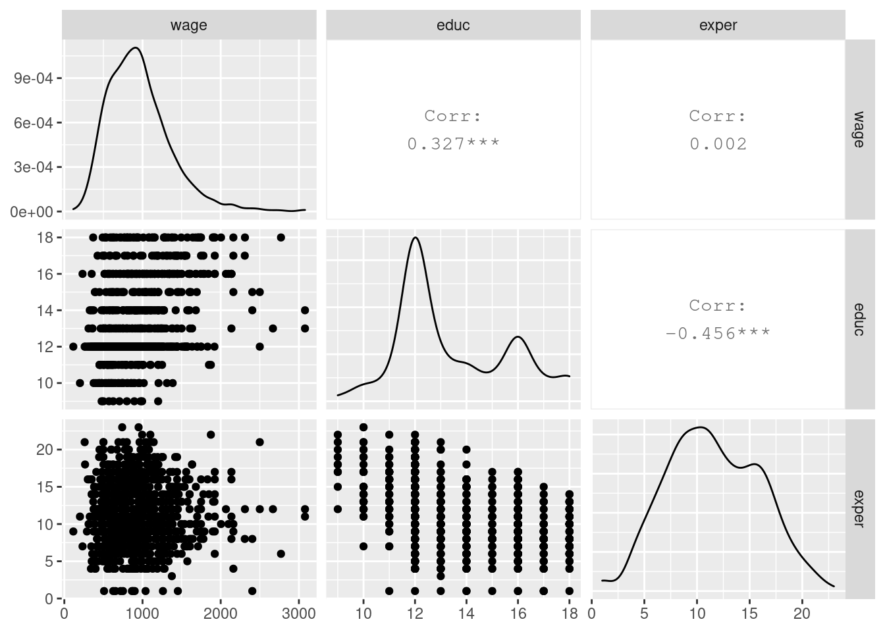
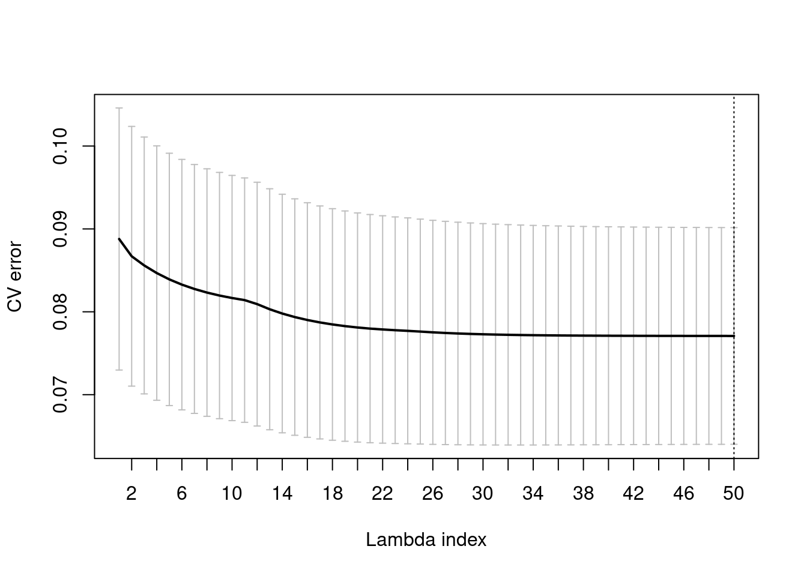

glinternet
라소(lasso)나 능형 회귀(ridge regression) 방법은 glmnet 패키지에 잘 구현되어 있으며, 이를 활용하면 특징 변수의 선택을 체계적으로 수행할 수 있다[1]. 이 패키지에는 교차 검증이 구현되어 있어 라그랑주 승수(lagrange multiplier)와 MSE 평균 및 MSE의 분산 관계를 파악할 수 있다. 그리고 그 관계로부터 적절히 선택된 변수를 제안해 준다. 하지만 교호 효과가 유의하나 주 효과가 유의하지 않는 경우에 glmnet은 주 효과를 제거해 버릴 수 있어 문제가 생긴다. 일반적으로 모델 해석을 분명하게 제시하기 위해 유의하지 않더라도 주 효과를 제거하지 않는데[2], 이런 문제를 다루기 위해 glinternet 패키지가 개발되었다[3]. 이 글에서는 이론적인 내용 보다는 glinternet의 기본 사용 절차를 소개한다. Peter의 누리집을 참고하였다[4].
데이터
Woodridge의 WAGE2 데이터를 사용한다[5]. 변수 설명은 다음과 같다.
- wage: 월 수입, 응답 변수
- educ: 년 단위 교육 기간
- exper: 년 단위 경력
library(tidyverse)
library(glmnet)
library(glinternet)
library(wooldridge)
library(GGally)
library(knitr)
data("wage2")
wage <- wage2 %>%
select(wage, educ, exper)
wage %>%
head()## wage educ exper
## 1 769 12 11
## 2 808 18 11
## 3 825 14 11
## 4 650 12 13
## 5 562 11 14
## 6 1400 16 14wage %>%
ggpairs()
그림에 산점도, 분포, 상관 계수가 나타나 있다. wage와 educ의 상관 계수 0.327에 비하여 wage와 exper의 상관 계수는 0.002로 exper와 wage는 서로 직접적인 관계가 없다. 흥미롭게도 educ와 exper 간에는 음의 상관 계수 -0.456이 나타나는데 공부를 길게 한 사람은 아무래도 경력이 부족해질 수밖에 없는 것을 뜻한다. 이 논의로부터 wage는 educ만의 함수 \(\text{wage} = f_1(\text{educ})\)로 보는 것이 좋은가? 아니면 educ와 exper 특성 변수 사이에 관련 함수 \(g(\text{educ}, \text{exper}) = c\)가 존재하므로 \(\text{wage} = f_2(c) = f_2(g(\text{educ}, \text{exper}))\) 관계로 보는 것이 타당할까? glinternet을 통하여 이 관계를 찾아보자.
교차 검증 모델
X = wage %>%
select(educ, exper)
Y = log(wage$wage)
cvfit <- glinternet.cv(X, Y, numLevels = rep(1, 2))
plot(cvfit)
# index_iStd <- which(cvfit$lambda == cvfit$lambdaHat1Std)
coefs <- coef(cvfit$glinternetFit)[[30]]
coefs$mainEffects## $cat
## NULL
##
## $cont
## [1] 1 2coefs$interactions## $catcat
## NULL
##
## $contcont
## [,1] [,2]
## [1,] 1 2
##
## $catcont
## NULL이 예제에서는 분산-편향성 절충 관계가 명확하게 드러나지 않는다. 산점도나 CV error 그래프에도 확인할 수 있듯 데이터의 분산이 크기 때문일 것이다. 여전히 glinternet은 lambda 값을 lamdaHat1Std에 저장하여 사용자에게 제안해 준다. 이 예제의 경우 lambda의 범위 내에서 CV error가 가장 적은 마지막 값이 되었다. lambda 인덱스 30이후에는 CV error의 변화가 거의 없으므로 인덱스 30을 이용하여 모델 선정을 진행해 본다. 그 lambda에서 결과를 coefs에 저장하였다. 교호 효과 interactions에서 contcont(연속형 특징 변수 간 교호작용) educ(1)과 exper(2)j의 교호 작용이 존재하고, 주 효과 mainEffects에 1, 2이 모두 나타나 있다. 각 계수 추정치는 다음과 같다.
coefs$mainEffectsCoef## $cat
## list()
##
## $cont
## $cont[[1]]
## [1] 0.05432751
##
## $cont[[2]]
## [1] -0.003726177coefs$interactionsCoef## $catcat
## list()
##
## $contcont
## $contcont[[1]]
## [1] 0.001543351
##
##
## $catcont
## list()비교를 위하여 lm함수로 적합해 보자.
mod_lm_1 <- lm(log(wage) ~ educ * exper, data = wage)
summary(mod_lm_1)##
## Call:
## lm(formula = log(wage) ~ educ * exper, data = wage)
##
## Residuals:
## Min 1Q Median 3Q Max
## -1.88558 -0.24553 0.03558 0.26171 1.28836
##
## Coefficients:
## Estimate Std. Error t value Pr(>|t|)
## (Intercept) 5.949455 0.240826 24.704 <2e-16 ***
## educ 0.044050 0.017391 2.533 0.0115 *
## exper -0.021496 0.019978 -1.076 0.2822
## educ:exper 0.003203 0.001529 2.095 0.0365 *
## ---
## Signif. codes: 0 '***' 0.001 '**' 0.01 '*' 0.05 '.' 0.1 ' ' 1
##
## Residual standard error: 0.3923 on 931 degrees of freedom
## Multiple R-squared: 0.1349, Adjusted R-squared: 0.1321
## F-statistic: 48.41 on 3 and 931 DF, p-value: < 2.2e-16앞서 언급한 바와 같이 educ와 exper 특징 변수 만으로 설명할 수 있는 정보가 크지 않다는 것을 \(R^2 = 0.3923\)에서 알 수 있다. exper의 추정치는 t = -1.076으로 유의하지 않다. exper 영향을 제외한 모델과 비교해보자.
mod_lm_2 <- lm(log(wage) ~ educ, data = wage)
summary(mod_lm_2)##
## Call:
## lm(formula = log(wage) ~ educ, data = wage)
##
## Residuals:
## Min 1Q Median 3Q Max
## -1.94620 -0.24832 0.03507 0.27440 1.28106
##
## Coefficients:
## Estimate Std. Error t value Pr(>|t|)
## (Intercept) 5.973062 0.081374 73.40 <2e-16 ***
## educ 0.059839 0.005963 10.04 <2e-16 ***
## ---
## Signif. codes: 0 '***' 0.001 '**' 0.01 '*' 0.05 '.' 0.1 ' ' 1
##
## Residual standard error: 0.4003 on 933 degrees of freedom
## Multiple R-squared: 0.09742, Adjusted R-squared: 0.09645
## F-statistic: 100.7 on 1 and 933 DF, p-value: < 2.2e-16anova(mod_lm_2, mod_lm_1)## Analysis of Variance Table
##
## Model 1: log(wage) ~ educ
## Model 2: log(wage) ~ educ * exper
## Res.Df RSS Df Sum of Sq F Pr(>F)
## 1 933 149.52
## 2 931 143.30 2 6.2153 20.189 2.61e-09 ***
## ---
## Signif. codes: 0 '***' 0.001 '**' 0.01 '*' 0.05 '.' 0.1 ' ' 1anova 결과도 교호 작용을 포함하는 것이 중요하다는 것을 확인하였다. 이는 glinternet 결과와 같다.
나가며
특징 변수가 많아지면 변수 선정 과정에서 교호 효과까지 평가해 보는 것이 쉽지 않다. 하지만 glinternet 패키지를 활용하면 교호 작용을 포함하여 특징 변수를 손쉽게 선정할 수 있다.
참고
- glmnet vignette, https://web.stanford.edu/~hastie/glmnet/glmnet_alpha.html
- whuber (https://stats.stackexchange.com/users/919/whuber), What if interaction wipes out my direct effects in regression?, URL (version: 2010-12-14): https://stats.stackexchange.com/q/5481
- Michael Lim, Trevor Hastie, Learning interactions through hierarchical group-lasso regularization, arXiv:1308.2719
- Peter’s blog, https://strakaps.github.io/post/glinternet/
- Wooldridge, Introductory Econometrics, 7e, Exercise chap. 6 C3, 2019